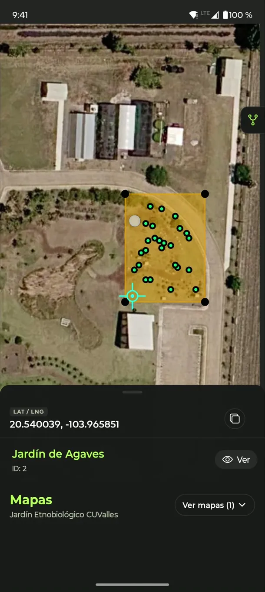
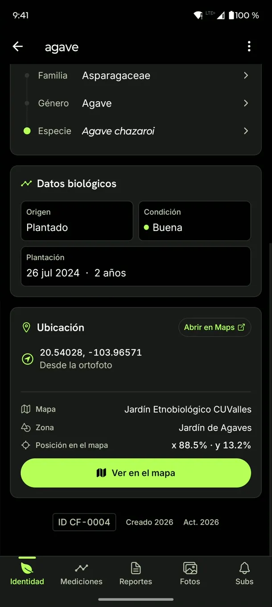
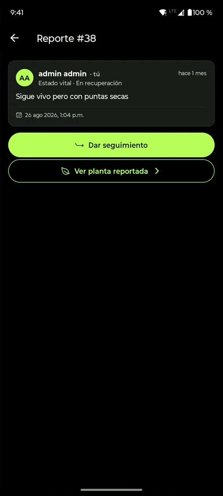
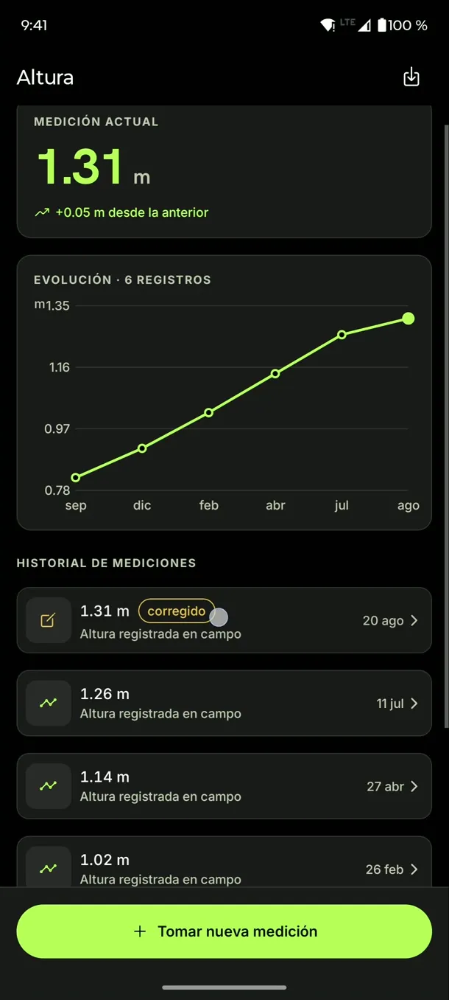
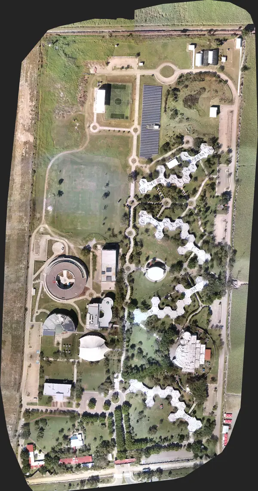
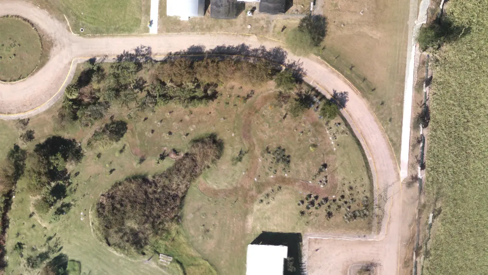
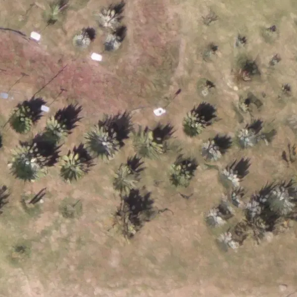

CuFlora
Colecciones vivas, ubicadas y con historial
Cada planta del jardín con su especie, su lugar exacto y su historia, en tu teléfono.
Así se ve en el teléfono
Mapa
- Ver cada ejemplar sobre la ortofoto de dron del jardín
- Tocar un punto para abrir su ficha
- Ver tu ubicación GPS con su círculo de precisión

Ficha del ejemplar
- Consultar su familia, género y especie
- Revisar su origen, condición y fecha de plantación
- Ver sus fotos con quién las tomó y cuándo

Reportes de campo
- Levantar un reporte con fotos, mediciones y la lectura GPS
- Ver todos los reportes o solo los de lo que sigues
- Corregir una medición sin borrar la original

Evolución
- Ver su última medición y cuánto cambió
- Seguir la gráfica de todas sus mediciones
- Medir la altura de un árbol con la cámara del teléfono

Trazabilidad para una colección viva
Un jardín etnobiológico no es un catálogo estático: sus ejemplares crecen, enferman y cambian. CuFlora articula los tres planos que exige seguirles el rastro. Caso de estudio: el Jardín Etnobiológico de Jalisco, CUValles (UdeG).
- Identidad taxonómica
- La taxonomía se organiza como jerarquía —familia, género, especie— y de cada especie dependen los ejemplares concretos, con nombre científico, común, descripción e imágenes.
- Posición geográfica
- Cada ejemplar se ubica dentro de una zona, y las zonas dentro de un mapa de flora, con georreferenciación de bajo costo independiente de servicios cartográficos comerciales.
- Evolución temporal
- Los reportes de campo —encadenados entre sí— registran el historial de cada ejemplar en el tiempo: mediciones fechadas, intervenciones y aparición de plagas.



Lo que hay detrás
Lo que no se ve en la pantalla y hace que los datos sean confiables.
- Georreferenciación propia
- Sin ArcGIS ni Google Maps: un modelo matemático propio, que corre en el backend, lleva cada punto de la ortofoto a latitud y longitud, y las lecturas GPS de campo lo contrastan.
- Exportación a CSV
- Plantas, reportes y catálogos se exportan con los mismos filtros de la app —fecha, mapa, taxón— para analizarlos en una hoja de cálculo o en R.
- Roles, permisos y bitácora
- Roles de administración, investigación y consulta, con permisos que se ajustan por persona desde el panel web de administración. Los cambios y los accesos (con su IP) quedan en bitácora, las sesiones se pueden revocar y los respaldos de la base son automáticos. El registro exige correo institucional y bloquea bots.
- Notificaciones
- Sigue un ejemplar, una zona o un mapa completo y recibe avisos push, encolados para entrega asíncrona y tolerante a fallos.
- Cliente ligero
- La app solo captura la observación —texto, foto y lectura GPS—; la lógica, la validación y el procesamiento viven en el backend. La ortofoto se ajusta a la memoria de cada teléfono y se guarda para usarla en campo.
- Para cualquier jardín
- Otro jardín puede montar su propio servidor y encender solo los módulos que necesita; la app se conecta a él eligiendo el servidor al iniciar sesión, sin recompilar.
- API para desarrolladores
- Plantas, taxonomía, mapas y reportes se leen con una llave de solo lectura que se crea desde el Perfil de la app. Ver la documentación.
Arquitectura de microservicios
La app móvil —único cliente de referencia— habla por HTTPS con un API Gateway (BFF) que valida el token y enruta por TCP a microservicios aislados: usuarios, plantas y mapas, reportes, imágenes y notificaciones. El backend expone una API consumible por distintos clientes.
El gateway revisa el token y el permiso para reportar; Reportes guarda la observación, Plantas y mapas dice en qué zona y mapa está el ejemplar, y Notificaciones avisa a quien los sigue.
- UsuariosCuentas, permisos y bitácoraMariaDB
- Plantas y mapasTaxonomía, ortofotos y georreferenciaMariaDB
- ReportesReportes, hilos y medicionesMariaDB
- ImágenesFotos con autor y horaMariaDB
- NotificacionesSuscripciones y avisos pushMongoDB · BullMQ
Ver todas las tecnologías
| Cliente móvil | Expo · React Native |
|---|---|
| Proxy inverso | NGINX (terminación TLS) |
| Gateway · Servicios | NestJS (REST en el gateway, TCP MessagePattern entre servicios) |
| Mapa | React Native Skia (ortofoto y capas) |
| Ortofotos | Dron · QGIS (complemento propio que publica la georreferencia) |
| ORM | TypeORM |
| Datos | MariaDB (relacional) · MongoDB (notificaciones) |
| Colas | BullMQ · Redis |
| Push | Expo Push API (sin Firebase) |
| Correo | Nodemailer · SMTP |
| Auth | JWT (Passport · bcrypt) · RBAC por permisos |
| Framework interno | kawi-aa-nestjs (CRUD, filtros y paginación) |
| Despliegue | Docker · Compose · Cloudflare |
Preguntas frecuentes
Sobre la instalación, las actualizaciones y el acceso.
¿Hay versión para iPhone?
No por ahora. La app se distribuye solo para Android 7.0 o superior con procesador de 64 bits, que son casi todos los teléfonos de los últimos años.
¿Por qué no está en Play Store?
CuFlora es un proyecto académico en desarrollo y por ahora la usa un grupo cerrado. Distribuir el APK directamente permite publicar cambios sin esperar la revisión de la tienda.
El archivo siempre se descarga desde GitHub. Para comprobar que no se alteró, compara su huella SHA-256 con la de esta página.
¿Cómo actualizo la app?
Descarga el APK nuevo desde esta página e instálalo encima. No hace falta desinstalar, y conservas tu sesión y las ortofotos guardadas.
Si tenías una versión de prueba anterior a la 1.1.0 y Android avisa de un conflicto con el paquete, desinstálala primero: esas versiones se firmaban con otra llave.
¿Qué permisos pide y para qué?
Cámara, para las fotos de los reportes, y ubicación, para la lectura GPS de la observación y para mostrarte en el mapa. Cada foto guarda quién la subió y a qué hora se tomó.
¿Funciona sin señal?
Las ortofotos se guardan en el teléfono después de verlas por primera vez, así que el mapa carga rápido en campo. Para enviar reportes sí se necesita conexión; si el servidor no responde, la app te avisa.
¿Cómo consigo una cuenta?
Por ahora el acceso es por invitación: las cuentas las da el equipo del proyecto para controlar quién edita el inventario. Pide la tuya en claudio.rodriguez4333@alumnos.udg.mx.
¿Puedo usar CuFlora en otro jardín?
Sí. El backend se instala en un servidor propio y cada módulo (reportes, imágenes, notificaciones…) se puede apagar si no se necesita. En la app, el servidor se elige al iniciar sesión, sin recompilarla. Para coordinarlo escribe a claudio.rodriguez4333@alumnos.udg.mx.
Instala CuFlora en tu Android
La app se distribuye como APK, fuera de Play Store. Instalarla toma un par de minutos.
CuFlora para Android
Descargar APK- Versión
- 1.2.1 · 18 nov 2026
- Tamaño
- 56 MB
- Requiere
- Android 7.0 o superior, procesador de 64 bits (ARM)
- SHA-256
02eabba04c4db21e708165590c905f503aa0160eb238b2ab3daed7c862982631
Notas y versiones anteriores en GitHub Releases.
Descarga el APK desde el teléfono
Abre esta página en el navegador de tu Android y toca “Descargar APK”. Si avisa que el archivo puede ser dañino, elige “Descargar de todos modos”: lo dice de cualquier app que no viene de Play Store.
Permite instalar apps desconocidas
Al abrir el archivo, Android pedirá permiso para que tu navegador (o tu app de archivos) instale apps. Activa “Permitir de esta fuente” y regresa.
Instala y abre CuFlora
Toca “Instalar”. Si Play Protect pregunta, elige “Instalar de todos modos”. Ya instalada, puedes quitarle ese permiso al navegador.
Inicia sesión
Entra con la cuenta que te asignaron y acepta los permisos de cámara y ubicación cuando la app los pida.
¿Necesitas una cuenta?
Por ahora el acceso es por invitación. Escribe a claudio.rodriguez4333@alumnos.udg.mx con tu nombre y para qué la usarás, y te mandamos tus datos de acceso.